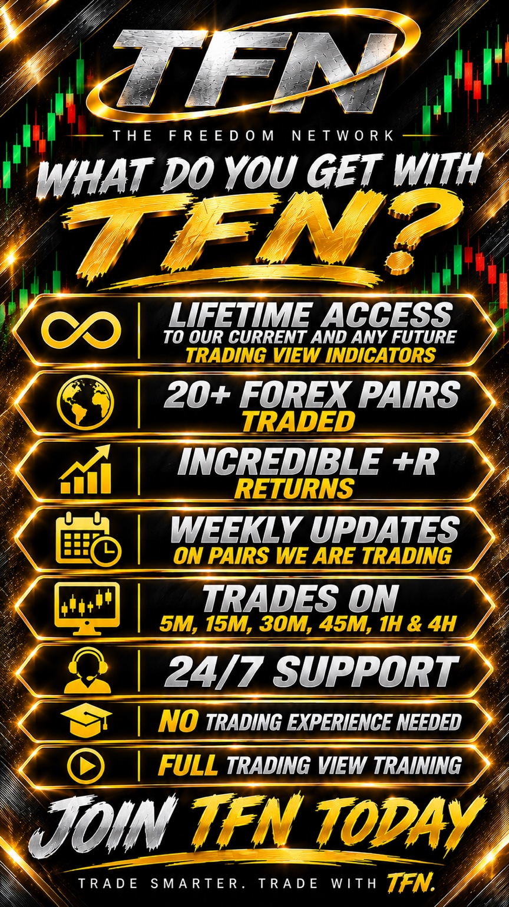

Lifetime access to our current and any future TradingView indicators.
Trading made simpler.
A TradingView indicator backed by a community, ongoing updates, full training and support. Whether you're new to trading or already experienced, TFN is built to help you approach the markets with a clear plan.
What do you get with TFN?
Coverage across more than 20 forex pairs.
Incredible +R returns. Trading involves risk and results are not guaranteed.
Weekly updates on the pairs we are trading.
Trades across 5M, 15M, 30M, 45M, 1H and 4H charts.
Support available whenever you need a hand.
Beginners are welcome. No previous trading experience required.
Training to help you get set up and understand how to use the indicator.

The Freedom Network
Ready to trade with TFN?
Get lifetime access to our current and future TradingView indicators, plus training, watchlist updates and support.
Buy TFN access securelyPayment is processed securely by Stripe. After checkout, follow the instructions on the confirmation page to contact TFN support.